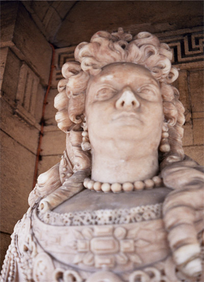
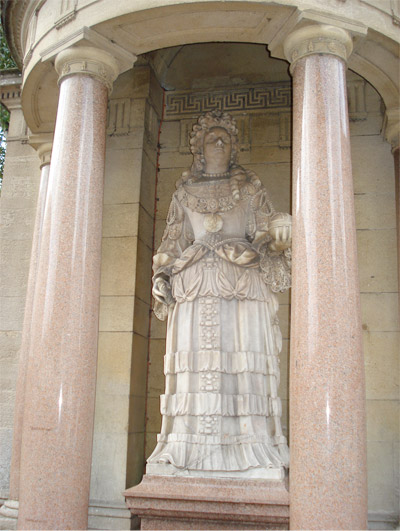
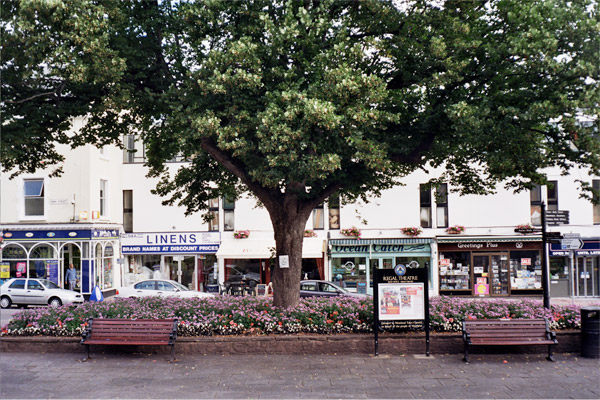
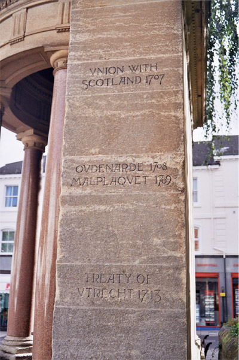

submissions
Anne R
By Frances Presley

Anne
she wore Elizabeth’s robes and her motto
semper eadem
always the same always the same
same stress
small state craft
the safety of small rooms
simperering susans
sempre forte
sempstress and starcher
nearest to my person
Margaret Tyzack as Anne in black and white pre-MT
bagged eyes lines descending on sleepless
reasonable Augusta! considering nights
O, lucid expostulator in double chin
advancing while godolphins dance backwards
pearls strung on stout neck the global shell infolds
dost sometimes counsel take and sometimes tea
brilliant light shone down upon the stately Queen Anne service
shone through the thinness of the shallow flowered cups
tea, cried Miriam, should never be drunk from cold white cups
sip down to the pattern sit down to action
from Windsor Forest
Her cereal gifts in waving prospect and nodding tempt rich industry sits peace and plenty tell
when Anthony sends some thoughtless town near and more near sudden they seize and high in air
the thinking pheasant
wound ground
And high in air
|
here serial slips wave to prospect and noddies tempt smiling s ~ the plains a Gordon reigns
her eager sons to war with ease and plenty blest close the lines invest the amazed defenceless maize America’s standard flies
springs wings
dyes eyes unfold gold
the standard harrier dies |
after Pope

Speaking by letters
“It must, said Maynwaring afterwards, have been like
addressing a statue filled with earth.”
David Green, Queen Anne
My dear Mrs Freeman if ever you should forsake me, I would have nothing more
to do with the world, but make another abdycation, for what is a Crown
when ye support of it is gon
your poor unfortunat faithfull Morly
Morly who is still so lame that she can hardly walk the length of the room, and
that with two sticks
a creeple inclined so much to vaypours
My poor hart is so tender I durst not tell you what was the matter with me, because I
knew if I had begun to speak, I should not have bin fitt to be seen by anybody… I fancied
… that you have a wrong and hard thought of me. I should be very glad to know what
they are that I might clear myself, but let it be in writing
for I dare not venture to speak with you
The difficulties I labour under at this time are so great and so uneasy to me , that
they will not suffer me any longer to keep my thoughts to myself, and I choose
this way of explaining them to you, rather than endeavour to speak
and not be able to go on…
whether they are call’d Whigs or Torys, not to be tyed to one, nor to ye other, for if I
should be soe unfortunat as to fall into ye hands of ether, I shall look upon my self
tho I have the name of Queen, to be in realety but their slave
Whoever of ye Whigs thinks I am to be Hecktor’d or frighted into a Complyance
tho I am a woman, are mightily mistaken in me
They have been disputing my authority, and are certainly designing …to
tear that little prerogative the Crown has to peaces… how is it possible…
ever to take these people into my bosom?
I have this business of the Peace so much at hart
I can’t yet walk, but I hope by the time that public business requires my being in town
I shall get strength enough to bear the jolting of a coach
Note: It was Anne’s idea that she and Sarah Churchill call each other Morley and Freeman to avoid any inequality of rank.
Queen Anne's View

In her foreground is the recently re-paved Wellington square, and a smart poster board for the Regal Theatre: ‘Donated by Minehead Town Council on behalf of the people of Minehead’. An almost young couple and a red Routemaster advertise a new production of SUMMER HOLIDAY.
The board stands in front of a bright municipal begonia bed, and a large spreading lime tree: the one allowable tree. Beyond is the road, which used to be the main road to Porlock, but is now by-passed. Cars are parked, all over/ love the world.
On the other side of the road an elderly man in a blue v-neck jumper emerges with a newspaper folded in his hand. Next to him she would have seen the Plume of Feathers coaching inn, which survived the fire of 1791, but it was demolished in the 1960s, and now she is looking at a white retail box.
LINENS brand names at discount prices
Bedding
Curtains
Nets
Towels
& so much more
Ocean Catch
New manager. Fresh fish.
‘Today fishing. Get your bait here.’
BUTTERFLIES foliage CAFE
We’re all different, thank goodness. I only wish I had your memory. If only I could remember names. I could go to a meeting of top civil servants and within two minutes I’d forgotten who I was talking to. And that was because I wasn’t really interested. For instance, here’s a list of the church coffee morning. I only remember the woman who sits on my left and talks about pink rabbits occasionally. Bartley? Backley. I can’t go this week. Flu jab on the 30th. Arthritis hanging around. Down to 3 milligrams. Do you take co-codamol? And the BBC breakfast programme is absolute codswallop. Biggest issue is the European Union and this treaty and the BBC don’t tell us anything about it. News in brief, that’s all you get.
BUTTER the canopy FLIES
August 2007

Queen Anne statue, Minehead
‘… a statue of Queen Anne, presented by a Swede who became Sir J. Bancks, and in 1696 married a rich widow of the Luttrells (this statue – formerly in the church, now in Wellington Square – was carved by Francis Bird, a protégé of Grinling Gibbons)
What you will not find is an industry which supplied the stone for Queen Anne’s statue, though the industry was thriving when Thomas Gerard mentioned it in his ‘Particular Description of the County of Somerset’ (1633): ‘Att this place in our tyme a Dutch man hath found out mynes of excellent Alabaster, which they much use for Tombes and Chimney pieces. … for variety of mixtures and colours…
Portrait of Exmoor JBH Peel 1907
‘An uncommonly fine piece with great skill in the rendering of the details of the clothes…The statue is made of alabaster and attributed to Francis Bird. It would not do discredit to him.’
South and West Somerset Pevsner
‘In 1698 Jacob was elected Member of Parliament for Minehead and served the borough until 1713; he was knighted in 1699. Bancks was a great admirer of Queen Anne; he saw her statue at the West Front of St Paul’s Cathedral in London, and in 1719 commissioned the sculptor, Francis Bird, to make a similar one for Minehead. The effigy was set up in St Michael’s church, but was removed in 1880 when the church was restored. Plans fell through to place Queen Anne in the new Town Hall and eventually, in 1893, the townspeople subscribed to defray the cost of a canopy and the re-erection for the statue at its present site.’
Somerset Curiosities Enid Byford 1987
Also inscribed on the Victorian canopy:
Captvre of Gibraltar Battle of Blenheim
|
1704 1704
|
Vnion with Scotland Ovdenarde Treaty of Vtrecht |
1707 1708 1713 |
Whose statue is this?
I’m beginning to wonder whether this statue is by Francis Bird, although papers may exist to prove it. It bears very little resemblance to the statue of Queen Anne at St Paul’s, and is more like the white marble statue of Queen Anne by Rysbrack, erected for Sarah Churchill at Blenheim.

Frances Presley was born in Derbyshire, and grew up in Lincolnshire and Somerset. She now lives and works in London. She studied modern literature at the University of East Anglia and the University of Sussex, writing dissertations on Ezra Pound and Guillaume Apollinaire, as well as the contemporary French poet, Yves Bonnefoy. She moved to London to work as a librarian, and specialized in research and information for community development and anti-racism projects. Publications of poems and prose include The Sex of Art (North and South, 1988), Hula Hoop (Other Press, 1993), Linocut (Oasis, 1997); and Private writings: a Vermont journal (Maquette, 1998) with drawings by Peterjon Skelt. She has collaborated with the artist Irma Irsara, in a multi media performance about clothing and the fashion trade in London, Automatic Cross Stitch, (Other Press, 2000); and with the poet Elizabeth James in an email text and performance, Neither the One nor the Other (Form Books, 1999). Somerset Letters (Oasis, 2002), with drawings by Ian Robinson, explored intersections of community and landscape. The title sequence of Paravane: new and selected poems, 1996-2003 (Salt, 2004) is a response to 9/11/2001, and to the IRA bombsites in London. Myne: new and selected poems and prose, 1976-2006, (Shearsman Books, 2006) includes two new Somerset sequences, of which the most recent is ‘Stone settings’, an approach to the Neolithic stone sites on Exmoor and part of a collaboration with the poet Tilla Brading. Presley has also written various reviews and essays. She has co-translated the work of the Norwegian poet Hanne Bramness: Salt on the eye, (Shearsman Books, 2007). Her small press, 'The Other Press', recently published a book of experimental prose by Mary Michaels.